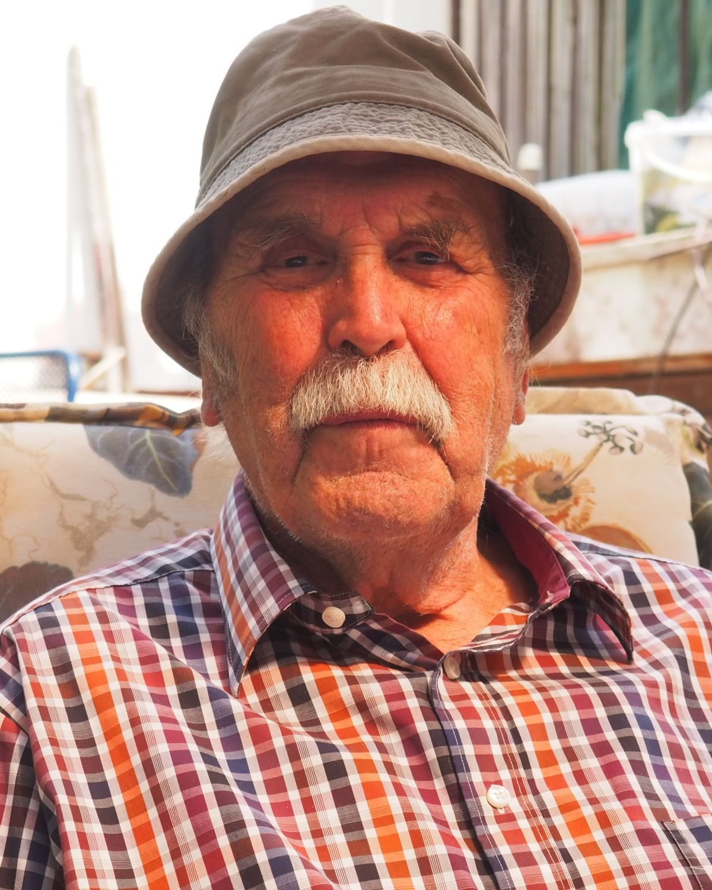

Wolfgang Timpel
8. Februar 1935 in Weimar bis 3. Juni 2024. Restaurator, Archäologe und Bodendenkmalpfleger in Thüringen.


Leben
Ein Leben lang in Weimar und im Boden Thüringens: vom Lehrling im Museum bis zum promovierten Archäologen.
Wolfgang Timpel kam mit siebzehn an das Museum für Ur- und Frühgeschichte Thüringens in Weimar und lernte dort Restaurator. Er blieb dem Museum und der Archäologie in Thüringen fast fünfzig Jahre treu, leitete zahlreiche Ausgrabungen, unter anderem am Erfurter Dom, und schrieb über Burgen, Herrensitze und die Keramik des Mittelalters.
- 1935
- Geboren am 8. Februar in Weimar.
- 1952
- Mitarbeiter am Museum für Ur- und Frühgeschichte Thüringens.
- 1955
- Abschluss als Restaurator, danach Fernstudium der Museologie.
- 1963
- Abteilung Bodendenkmalpflege des Museums, bis zum Jahr 2000.
- 1967
- Studium der Ur- und Frühgeschichte an der Universität Halle.
- 1983
- Wissenschaftlicher Sekretär im Beirat für Bodendenkmalpflege, bis 1990.
- 1991
- Gebietsreferent für Westthüringen am Thüringischen Landesamt für Archäologie.
- 1992
- Promotion über die Keramik des 8. bis 12. Jahrhunderts im westlichen Thüringen.
- 2000
- Ruhestand.
- 2024
- Gestorben am 3. Juni.
Literatur
Eine Auswahl seiner Schriften. Unterstrichene Titel lassen sich online lesen.
Über ihn geschrieben
- Diethard Walter: Dr. phil. Wolfgang Timpel zum 70. GeburtstagAlt-Thüringen 37, 2005
- Ines Spazier: Dr. phil. Wolfgang Timpel zum 80. GeburtstagAlt-Thüringen 44, 2014/15
- Sebastian Brather: Timpel, WolfgangArchäologie und Denkmalpflege in der DDR, Lukas Verlag, Berlin 2023
| 1972 | Die ur- und frühgeschichtlichen Befestigungen des Kreises Mühlhausen, mit Paul GrimmMühlhausen |
| 1975 | Ergebnisse archäologischer Untersuchungen auf der Hasenburg bei HaynrodeBerlin |
| 1982 | Gommerstedt, ein hochmittelalterlicher Herrensitz in ThüringenWeimar |
| 1986 | Archäologische Untersuchungen auf der Wüstung Hugenworbis, mit Harald ReußeEichsfelder Heimathefte |
| 1990 | Die mittelalterliche Keramik der KyffhäuserburgenBerlin |
| 1995 | Die früh- und hochmittelalterliche Keramik im westlichen ThüringenStuttgart |
| 1999 | Thüringer. Hauswerk und HandwerkStuttgart |
| 2014 | Der Stiftsberg in Heiligenstadt, mit Roland AltweinAlt-Thüringen |
| 2014 | Corpus archäologischer Quellen des 7. bis 12. Jahrhunderts in Thüringen, mit Ines SpazierLangenweißbach |
Texte
Aufsätze von Wolfgang Timpel, die im Netz zu finden sind, und Platz für Texte aus seinem Nachlass.
- Ein nachmittelalterlicher Brunnen auf dem Markt in WeimarZeitschriftenaufsatz, online bei der Thüringer Universitäts- und Landesbibliothek
- Der Stiftsberg in Heiligenstadtmit Roland Altwein, Alt-Thüringen 43, 2014
- Die ur- und frühgeschichtlichen Befestigungen des Kreises Mühlhausenmit Paul Grimm, 1972, als PDF
Platz für Texte aus dem Nachlass Vorträge, Briefe, Grabungsberichte: was die Familie hier zeigen möchte.
Fotos
Wolfgang Timpel zu Hause, im Wald und am Meer. Tippen oder klicken Sie auf ein Bild, dann wird es groß.
Autobiographie
Wolfgang Timpels eigene Erinnerungen, in seinen Worten.
Text folgt Hier erscheint die Autobiographie, sobald der Text vorliegt. Sie wird gesetzt wie der Lebensbericht: in Kapiteln, mit Initiale und ruhiger Zeile.